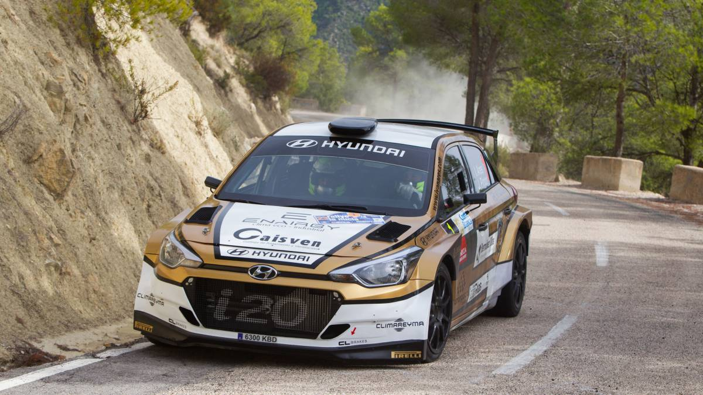

Quinto título para Ivan Ares
Iván Ares se proclama campeón de España de Rallys
Repóquer de victorias para Iván Ares, que con la conseguida en el Rally de la Nucía suma cinco consecutivas en el Nacional. El ya coronado campeón de España no ha perdido oportunidad para sumar un nuevo éxito a su temporada triunfal con el Hyundai i20, esta vez en tierras alicantinas, en la penúltima cita del año.
En esta ocasión ha vuelto a contar con la oposición del sorprendente Joan Vinyes, que con su Suzuki se colocó como primer líder. Un problema con la bomba de gasolina le despegó de la lucha, en la que le relevó el ídolo local, Miguel Fuster, que estrenaba Renault Clio y a falta de dos tramos se colocó a 11 segundos de Ares, aunque finalmente no pudo superarle. El tercer escalón del podio fue para el otro Swift de Gorka Antxústegi, con el Ford Fiesta de José Luis Peláez cuarto y el segundo Clio de Alberto Monarri, quinto.
Entre los vehículos de dos ruedas motrices se imponía el Peugeot de Javier Pardo, que se anotaba la victoria en la Beca R2. En GT la victoria era para el Abarth 124 de Álvaro Muñiz, que no pudo sumar los puntos que hubiera deseado entre los dos ruedas motrices tras el esfuerzo de su equipo por traerle un coche desde Italia. En la Dacia Sandero Cup triunfaba Antón Pérez Fojón, que además se aseguraba el título de la categoría.
CLASIFICACIÓN FINAL 1 Ares-Pintor (Hyundai i20), 1:37:30.6 2 Fuster-Aviñó (Renault Clio), a 44.5 3 Antxústegi-Iglesias (Suzuki Swift), a 1:05.3
CAMPEONATO DE ESPAÑA 1 Iván Ares, 322,8 puntos 2 Pedro Burgo, 215,4 3 Cristian García, 176,4